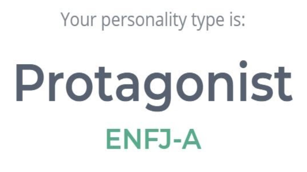

Mylaad's Profile
RMIT ID: s3843122
RMIT EMAIL: s3843122@student.rmit.edu.au
About Me
My name is Mylaad Dawod and I am a student at RMIT studying my first year of Bachelor of Information Technology. I was born in Baghdad, Iraq in 2001 which makes me 18 years old now. My hobbies include drawing, playing video games, watching movies/tv shows/animes and playing some sports. My interest in I.T began when I built my PC with my friends around 2-3 years ago. I’m interested in the building, creating and fixing aspect of technology and the variety of careers it has. Since I’m new to Information Technology, I don’t have experience in the field but there are areas I would like to try such as; Software Engineering/Development, Networks, Cybersecurity, Coding or something in the Business I.T field.
Personality Tests
The tests above do show some parts of who I am however, every human being changes through time, these tests are taking into consideration some of the personality traits I have but I don't take it seriously. These results show I am some-what able to cooperate in a team, but I believe that I am confident in being able to work in a team. I should take these tests into account when forming a team by choosing members who want to work in a group of people that accept each other and, try their hardest to achieve the outcome.
Ideal Job
...